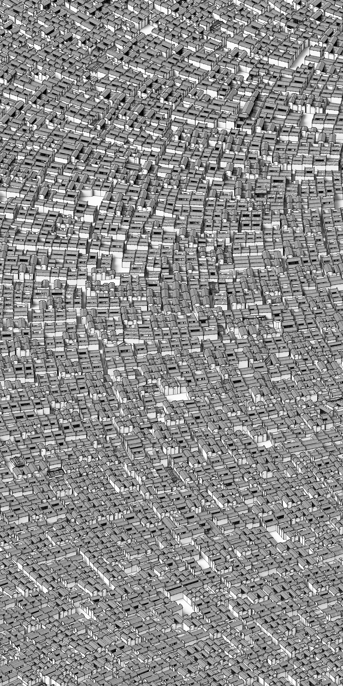

Encoding the Village
Encoding the Village proposes that architectural modeling is not about the manual craftmanship of fine drawings, but the producing of the codebook which encapulates the complexity of design decision making of architecture within just few pages of codes.
Encoding the Village explores this schema of architectural modeling taking Chinese traditional villages as an example. It introduces a set of hierarchical shape transformation rules that correspond to the levels of the entire village, the building plots, and each of the buildings. The rules were derived from the case studies and were implemented using the combination of procedural and iterative computational processes. The implementation was demonstrated by populating a set of virtual sites of various shapes and sizes with traditional houses generated by the computer program.
Generative rules
 buildings
buildings
plots and road networks
Results
computational process

outputs
-